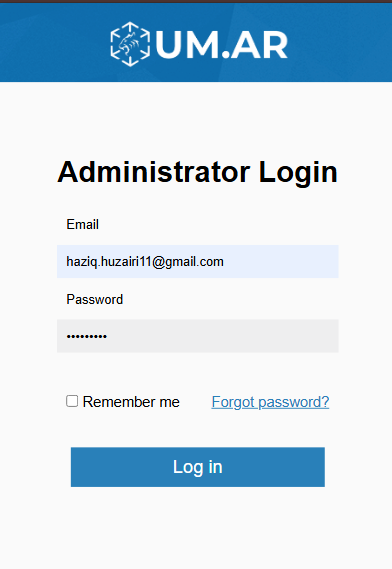

Guide on Using UM.AR
Below are some guide on how to use UM.AR properly.
How to Navigate in the main page
Buttons and Input
All the input buttons has their own functionality
- Search Bar:
Used to search locations in UM.AR - Event Organizer Login Button:
For event organizers to login and manage their dashboard. - Location Based AR Button:
To redirect and use Location Based AR page for exploring and navigating in UM's AR Environment. - Marker Based AR Button:
To redirect and use Marker Based AR page for scanning any UM.AR markers around UM. - Guide Button:
You're here already, chill. - Help Button:
To redirect to contact help page where you can email the developer when finding difficulties in using the website, found any bug or failure in the system, etc.
Events
- Event Card
You can view event details when you click any of the event cards.
Location Suggestions
- View Suggestions
You can see all location suggested based on what we have populated in UM.AR. - Filter Suggestions
You can filter the location suggestions by clicking the filter button. - View Location Detais
You can view location details when you click the respective location, in the details card, you can also redirect to the location websites. - Show Directions in AR Button
You can redirect to Location Based AR with navigation automatically initialize for you to navigate to your destination.
How to Use Location Based for Exploration
AR Innitialization
- Loading
When the page loads, it initialize the Location Based AR. This can take some times depending on your network connectivity and device specifications. Please wait patiently while all the AR and 3D assets being initialized. - Permission
You need to allow some permissions (Geolocation service, Motion and Camera) in order for the Location Based AR to be used. Please accept the permission for your browser. Don't worry, no data being recorded or stolen. UM.AR only use all the permission in the AR environment.
Moving in AR Space

- View Waypoints/Markers in the AR View
Turn your mobile phone camera around and you can see multiple waypoints around you based on respective locations.
AR Environment Based on each Waypoint
- Notification
When you are near a waypoint (approximately 30 meters), there will be a notification at the top left of your screen. The notification shows the current location that you are nearby. You can click this notification to view AR Environment for the respective Waypoint. - View Information About the Location
In the respective AR Environment, you can see the details description of the place, operating hours, contact information, and events available at that place. - Closing the Waypoint AR Environment
Click the hide button (The red button with stright through eye icon) to close the environment and continue using the Location Based AR.
Events Based on each Waypoint
- Events in the AR Environment
You can see events posters being shown in the container. These are the evetns that will be specifically held in the respective locations. - View Events in Card View
You can also view available events by clicking on the view events button at the top left of your page. To view next event in the list, just simply swipe left or right so the card will swap to the next event.
Notes Based on each Waypoint
- Notes in the AR Environment
As you move around the AR Environment, you can see a billboard that shows some sticky notes on it. This notes are being left by people that visited this waypoint. - View Notes in Card View
You can also view notes by clicking on the view notes button (the second one) at the top left of your page. This will show all available notes at this waypoint.
Adding Your Notes Into The Environment
- Add New Notes
You can click the add new notes button to customize your own notes to be put in the AR Environment. This action will redirect you to a new page where you can customize your stikcy notes by drawing or writing. Once finish editing, you can click send notes to finalize. - Notes Shown in the Environment
After sending the notes, the drawing page will be closed and you will be redirect back to the Location Based AR page. Please be note that your sticky notes may took some time to be included in the environment. If you can't see your notes, you can try to refresh the page and your notes will be updated. If the issue still persist, try to reopen the Location Based AR Page in a new window.
How to Use Location Based for Navigation
Using the Search Function
- Search Button
You can click the search button at the top right of the page to bring out the search bar. If you're not placing any input in the search bar, it will show the list of all waypoints available in the system. You can select any item from this list if you want to navigate to that waypoint. - Search Input
You can fill in the search bar to search waypoint that you want to go. When the suggestion appear, you can click the item to navigate to the waypoint in AR Mode.
Navigation in the Location Based AR
- Navigation Indicator
After you enable the navigation, the indicator will show up in the AR View. This indicaator will show you the path to your destination. Please be note that this path is based on pedestrian path. Be careful while using the AR Navigation and stay alert on your surroundings. While in the navigation mode, you can still interact with AR Environment for each waypoints if you are near one of them. - Exit the Navigation
You can exit the AR Navigation whenever you like. When you arrive at your destination or while you are in the middle of the navigation. Simply click the exit button (red button with exit icon) at the top right of the page.
Start Navigation from Main Page
- Show Directions in AR
When you click the show directions in AR button, it will redirect to the Location Based AR Page with the navigation automatically being initialized.
How to Use Marker Based AR
AR Innitialization
- Permission
You may need to allow some permissions (Motion and Camera) in order for the Marker Based AR to be used. Please accept the permission for your browser. Don't worry, no data being recorded or stolen. UM.AR only use all the permission in the AR environment. - Scanning AR Marker
If you found a UM.AR Marker, simply scan the marker with your Marker Based AR Camera
Marker Based AR: Bus Route AR View
- AR View
When you scan a Bus Route Marker, it will enable an AR environment for you to see available routes for the respective location. - Interacting with the Bus Route AR View
You can interact with the AR scene by clicking the bus icon button at top right of the page, and find your destination. The AR View will be updated based on the destination you choose. It will show available bus route to go to your destination. From here, you can easily analyze which bus you should take for your trip to your destination.
How to Log In, Sign Up and Use the Dashboard for Event Organizers
Navigate to Login/Signup Page
- Account Button
Click on the account button in the main page, it will redirect you to the login/signup page.
Sign Up for an Account
- Sign Up Form
In the login/signup page, scroll down until you see register section. Click on the register button to get the registration form. Fill in all the required field in order for you to register. Put you actual club name and its level. After verifying all the details. Click on the submit button to finalize your registration.
Login

- Login
If you already have an account, you can go to login section and fill in your email and password. Click the login button to proceed on the login process.
Viewing Dashboard
- Dashboard View
In the main dashboard view, you can see all of your events in the list. At the bottom, you can view all events available in UM.AR system.
Adding New Events
- Add New Events Button
Click on the add new events button at top right of the page. It will pop up an event form for you to fill. Complete the form by putting event name, event date, event time, event details, category of location and the location in which the event will be held. You also need to upload a poster for your events. Preferebally the poster need to have a square margin to look nice in the AR Environment. Please note that your event will appear in the AR Environment the next day. This is because the system will undergo maintenance at midnight to automatically transfer the posters into te AR Environment.
Edit/Delete Events
- View Your Event
You can view in detail of your event by selecting an event from the list. A popup will show up and you have an option to edit the event or not. - Edit Event
If you click on edit button, another popup will show. This is where you can modify the content and details of your events. After finish editing, you can continue by clicking save changes. Then your event will be updated to the latest one. - Deleting an Event
If you want to delete the event, simply click the delete button in edit mode. A confirmation popup will appear and you can proceed to delete the events.
Contact Help
Contact for Help/Enquiry/Report page
- Email to Function
You can choose to fill in the forms to email the developers on the issues/report/help/enquiries. Click send to email your content. - WhatsApp Redirect Link
If you are facing serious and urgent issues, feel free to reach out via WhatsApp to get faster response. Remember, only use this option when it is necessary.